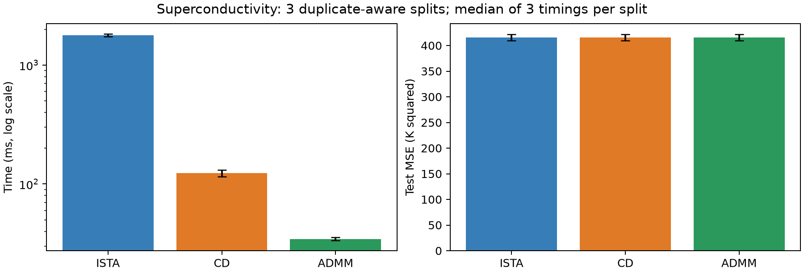

官方原始数据 21,263 行、81 特征。按完全相同的特征向量建立 15,170 个组，组别在训练/保留验证/测试间不重叠。保留全部行；仅用训练集做标准化，不用测试集调参。三算法使用原主实验参数和精度，27 次求解全部收敛。

时间包括准备与精度检查。先对每划分三次计时取中位数，再跨三个划分计算均值与样本 SD。原数据已工程化；分组不等同于按化学家族划分。本实验验证求解效率，不宣称材料科学预测性能最优。
[
{
"algorithm": "ISTA",
"n_splits": 3,
"total_s_mean": 1.7851270280467968,
"total_s_sd": 0.0459273819407531,
"setup_s_mean": 0.010892721979568401,
"setup_s_sd": 0.0004768185471650623,
"update_s_mean": 0.7104099962549905,
"update_s_sd": 0.02898584865635711,
"diagnostic_s_mean": 1.06048004127418,
"diagnostic_s_sd": 0.05346455571309905,
"iterations_mean": 7885.666666666667,
"iterations_sd": 217.9135914378296,
"relative_gap_mean": 9.99389253159018e-07,
"relative_gap_sd": 4.792788449658168e-10,
"test_mse_mean": 415.85099666536735,
"test_mse_sd": 5.981857212873655,
"test_r2_mean": 0.6356016495944735,
"test_r2_sd": 0.01576785764244751,
"objective_delta_mean": 8.882580004865304e-09,
"objective_delta_sd": 4.2695771509386856e-10,
"design_condition_mean": 799.9053929667016,
"design_condition_sd": 5.116027283908424
},
{
"algorithm": "CD",
"n_splits": 3,
"total_s_mean": 0.12368656927719712,
"total_s_sd": 0.008102239212401005,
"setup_s_mean": 0.002139138678709666,
"setup_s_sd": 0.0002823731073591518,
"update_s_mean": 0.1065440559759736,
"update_s_sd": 0.0062780031298205,
"diagnostic_s_mean": 0.01480518685032924,
"diagnostic_s_sd": 0.0024443711886912092,
"iterations_mean": 146.0,
"iterations_sd": 8.54400374531753,
"relative_gap_mean": 9.707657981458937e-07,
"relative_gap_sd": 1.836012310786969e-08,
"test_mse_mean": 415.8501609386871,
"test_mse_sd": 5.982084919238785,
"test_r2_mean": 0.6356023904599316,
"test_r2_sd": 0.015767600358595615,
"objective_delta_mean": 3.354908055068032e-08,
"objective_delta_sd": 1.0410529938435315e-08,
"design_condition_mean": 799.9053929667016,
"design_condition_sd": 5.116027283908424
},
{
"algorithm": "ADMM",
"n_splits": 3,
"total_s_mean": 0.03453276368478934,
"total_s_sd": 0.0009686435074526604,
"setup_s_mean": 0.0006255692181487879,
"setup_s_sd": 2.2237599834659608e-05,
"update_s_mean": 0.004241978283971548,
"update_s_sd": 6.273893248181374e-05,
"diagnostic_s_mean": 0.029580466138819855,
"diagnostic_s_sd": 0.0009418886291315597,
"iterations_mean": 232.0,
"iterations_sd": 8.717797887081348,
"relative_gap_mean": 9.86345244052812e-07,
"relative_gap_sd": 1.2015022810413183e-08,
"test_mse_mean": 415.85072823554873,
"test_mse_sd": 5.98191714092906,
"test_r2_mean": 0.6356018867545371,
"test_r2_sd": 0.01576779945502848,
"objective_delta_mean": 1.4690253162067771e-08,
"objective_delta_sd": 1.8113814600190637e-09,
"design_condition_mean": 799.9053929667016,
"design_condition_sd": 5.116027283908424
}
]